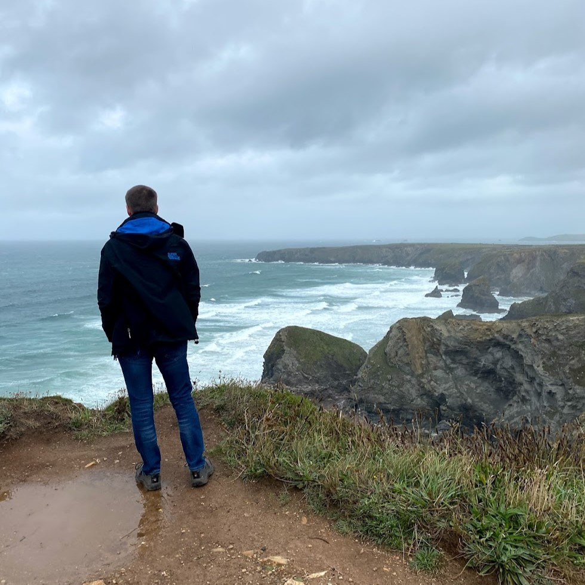
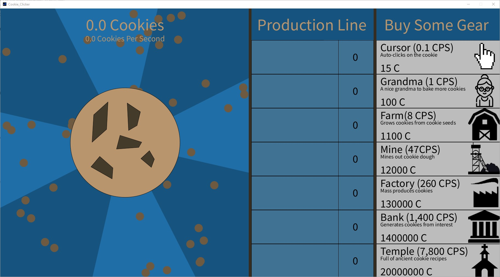
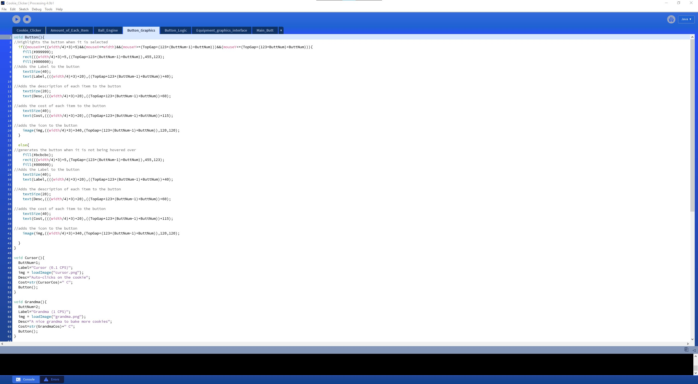
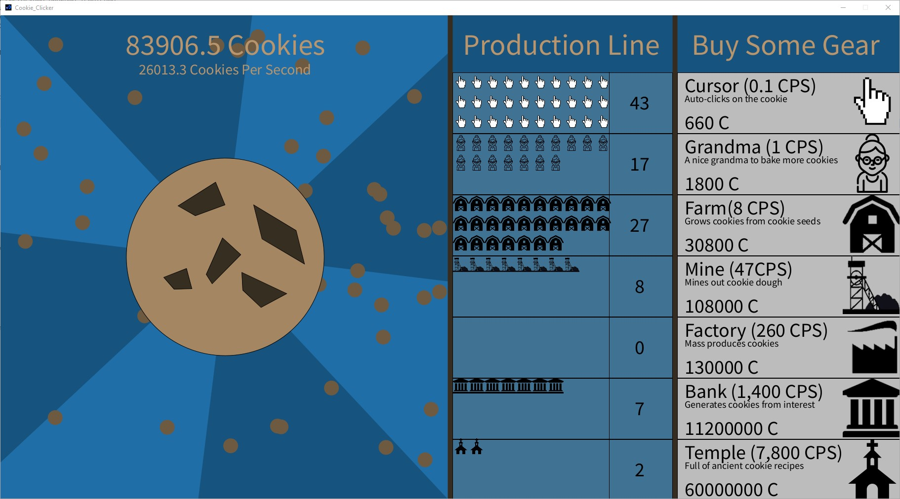
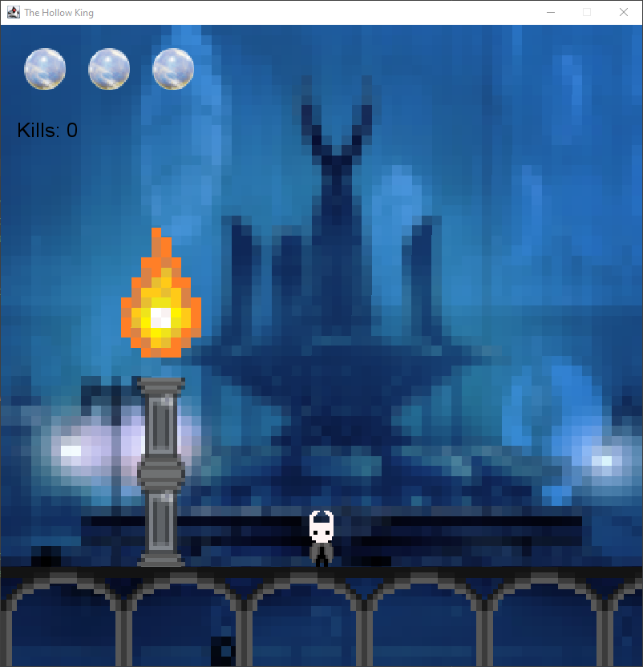
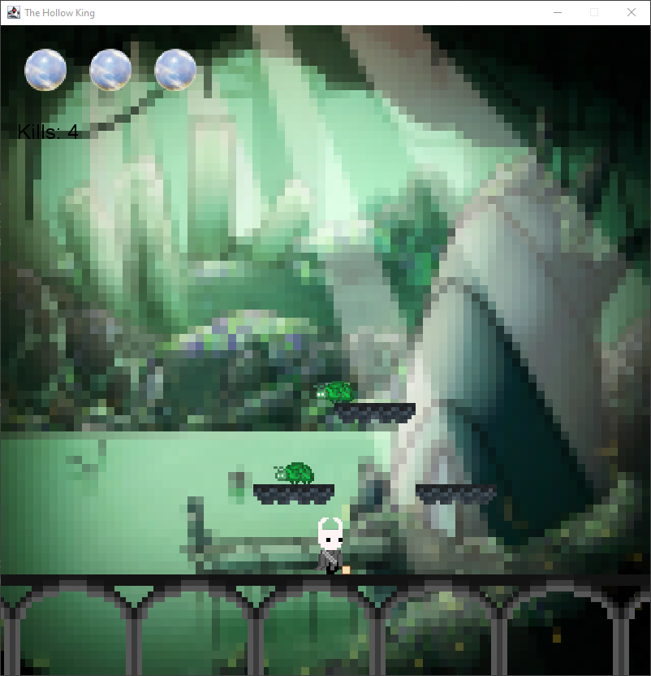
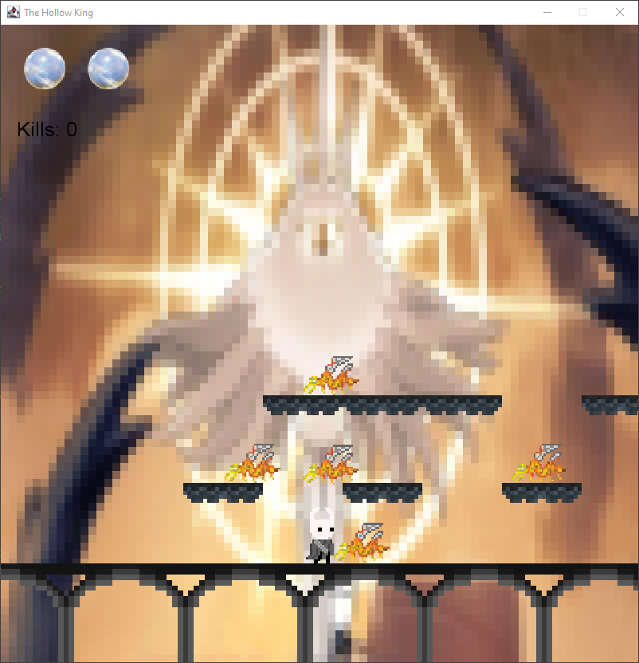

Sam CosfordI'm not gonna tell you my name,so.... I've built my own desktop from scratch and do a fair bit of PC gaming, although I only seem to be playing R6S at the moment. I completed both GCSE's and ALevels at St John's school and sixth form in Epping, Essex. My ALevels are in Government & Politics, Physics and Computer Science.(My ALevel CS teacher didnt know how to code very much so most of my coding is built off strange people on youtube using a potato as a mic.) I live in Waltham Abbey, on the border of Essex and Hertfordshire so i have a lovely hour and a half commute to uni everyday... |
 | |
|
|
||
Bootcamp 2020: Cookie ClickerMy project for the boot camp was based on a game called "Cookie Clicker". The original game can be found on platforms such as Steam and can also be played in web browsers. My version of the game first started out as just a circle that when clicked, incremented a counter by 1. The Cookie and CPS (Cookies Per Second) counters were then added to the top left of the screen so the user can visually see their progress. The buttons on the gith of the screen with their mouse over colour change were then added for better user interaction, with these buttons then came the implementaton of the ability to purchase new gear. This gear will automatically generate cookies so the user can automate production. Counters were added so that the user can see how many of each gear part they currently have. After this, smaller pictures of the gear were added to help the user better visually track how much gear they have, this also made the game seem more polished and more visually appealing. Price multipliers were then implemented so the cost of new gear better scales to the amount of cookies the user has. Finally effects such as the bouncing cookies on the right of the screen and the spinning background were added to make the game more detailed and interesting to the eye. Subroutines were used alot throughout this project as they make the code look neater and easier to read. Other skills such as image loading, rotating, translating and alot of variables were used. The code: https://github.com/SamCosford/Boot-camp-project.git | ||
|    |
|
|
2022 Java, The Hollow KingFor my CityEngine games project I created a side of platform shooter called "The Hollow King". inspiration was drawn from a indie game known as "Hollow Knight". the objective of my game is to kill enough of the enemies on each level so that you are able to use their souls to open the gateway. Once the gateway has been opened and youy have progressed to the next level, you lose the souls and have to start again in the new area. As the player you are able to shoot fireballs to slay the enemies. I started off by creating a single area with 2 enemies in it so the player has an easy area to get used to the controls and mechanics of the game. Over time, more features were added. Such as the border pillars to stop you falling off the map. Platforms were also added to the world to give it a more interactive environment. Other features such as saving and loading from a pause screen were also added so players can take breaks while playing the game. The enemies have a tracking mechanism so they are able to detect when a player gets close enough and start moving to attack them. All artwork in the game is done in a pixel art style for a visually appealing look. The code: https://github.com/cityteaching/citygame2122-SamCosford.git | ||
|    | ||